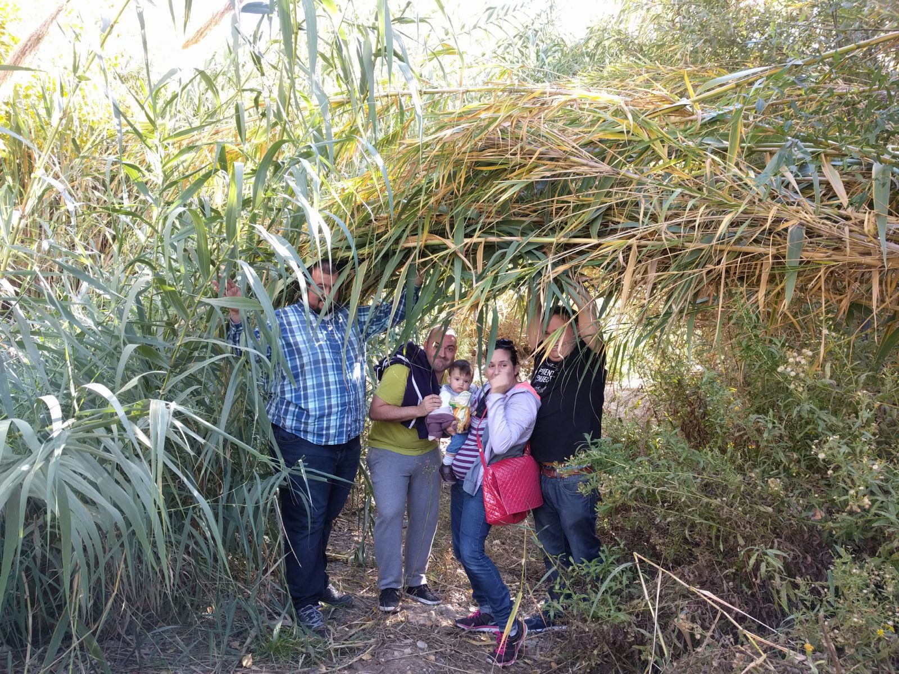
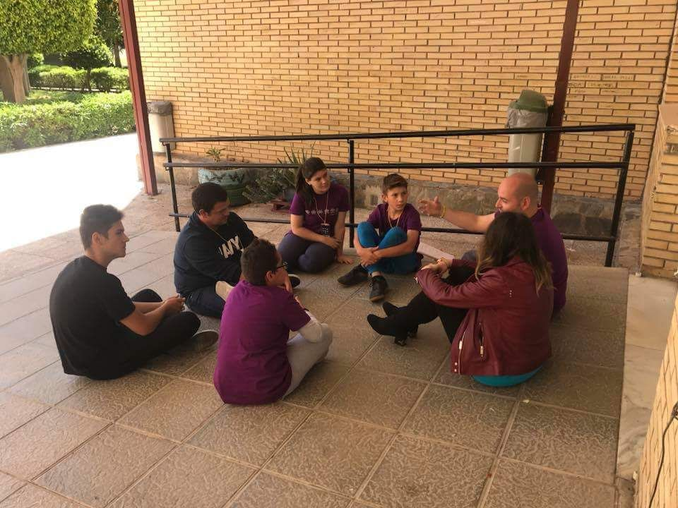
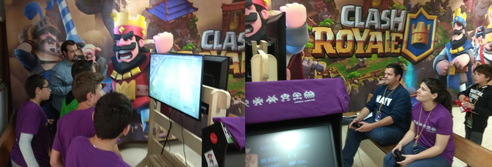
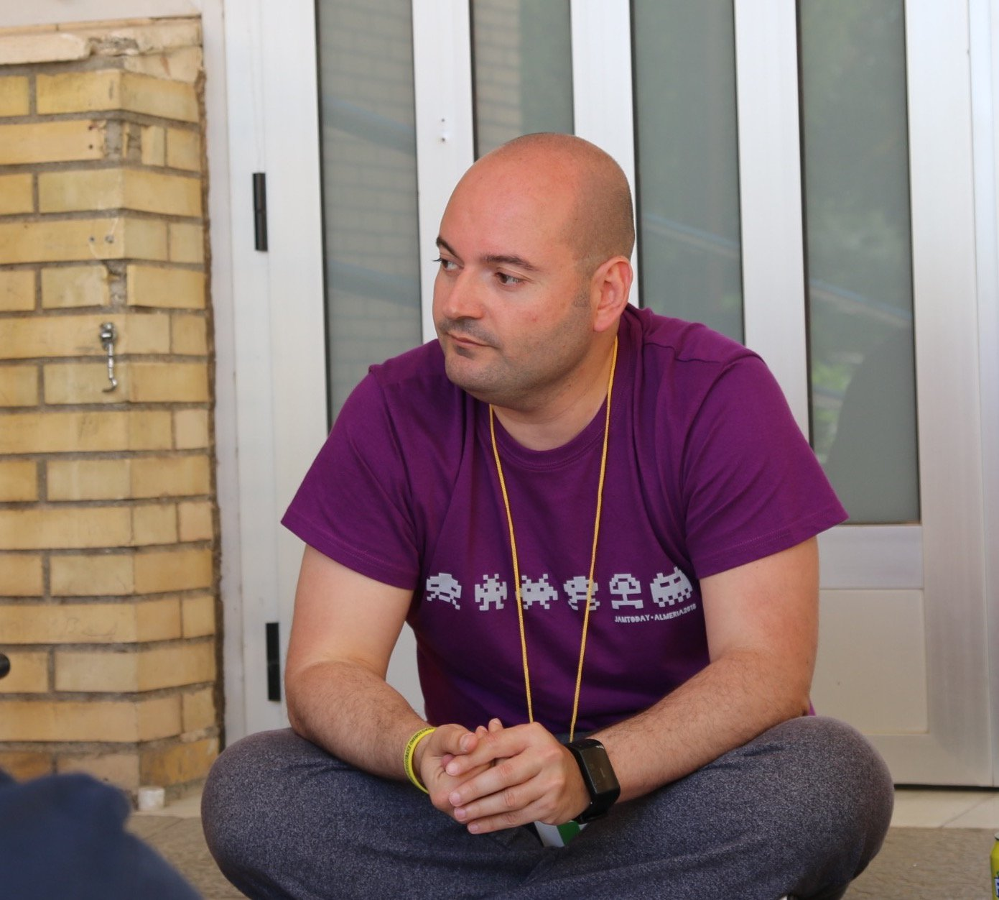

Python como pegamento social - Parte 3
Posted on mar 15 mayo 2018 in Experiencias
ANTECEDENTES
Esta historia narra como Python, un lenguaje de programación (eso que hablan los ordenadores) trasciende la informática, y se convierte en una herramienta de cohesión social. Si, ya lo se, ¿que pasa con la parte I y II? Bueno esas irán luego, aunque son anteriores a esta historia. Lo que pasa es que he creado este blog después de todo lo que aquí voy a narrar, y como autor de este lugar me tomo ciertas licencias ¡¡¡Vamos al lío!!!
Todo comienza con una visita a una pareja de amigos, Laura Cáceres y Diego Martínez. Ellos dos, junto a su compañero Juan Manuel Sánchez, trabajan en los centros Guadalinfo de sus pueblos, enseñando tecnologías Open Source. Y como el entorno rural no se ciñe sólo a sus casas, crearon la asociación Guadatech para poder llevar esa pasión que tienen por toda la provincia de Almería. La labor que hacen es encomiable y siento una gran admiración por ellos y su trabajo.

El caso es que hablando con Diego, me comentó que a Juanma y a él se les había calentado el hocico, y estaban preparando llevar varios equipos del Guadalinfo a la JamToday (un hackaton sobre videojuegos con temática social). Normalmente, Diego enseña Scratch (otro lenguaje más simple que Python) a los niños para empezar, pero uno de los equipos de su pueblo, Sorbas, lo quería llevar en la categoría de Python. ¿Y qué problema hay entonces? Pues que para la competición quedaban escasamente seis semanas, el equipo estaba formando en su mayoría por menores que nunca habían aprendido Python (no es un lenguaje complejo, pero 6 semanas es muy poco) y los chavales no estaban del todo motivados. Encantado le ofrecí mi mano y Diego tomó mi brazo (cosa que agradezco).
PREPARACIÓN
Durante cinco semanas estuve yendo un día por semana a Sorbas, que se encuentra a unos 70km de Almería capital. Diego tenía ya muy pensando que debían seguir un temario muy apañado que habían encontrado, basado en Pygame. Como yo estaba para aportar, eso hicimos, pero fui añadiendo mi granito de arena los días que iba. Los demás días era Diego quien los guiaba. Así que el equipo Python Junior Sorbas estuvo "currando" 5 semanas, a 1-3 sesiones de 2h por semana. El equipo era muy heterogéneo y dispar, compuesto por:
- Pablo, 6º de EGB ~ 11-12 años.
- Iona, 6º de EGB ~ 11-12 años.
- Eve (Sara), 3º de la ESO ~ 14-15 años.
- Sami, 1º de Bachiller Tecnológico ~ 16-17 años.
- Diego (se llama igual que el otro Diego), desempleado ~ 35 años.
El equipo de #python junior del #guadalinfo de #Sorbas concentrado siguiendo las explicaciones de @CrisConRu pic.twitter.com/lXepl2iNVd
— guadalinfosorbas (@guada_sorbas) 4 de abril de 2018
Lo primero que hice fue centrarme en las herramientas. Ningún miembro del equipo contaba con un ordenador propio, así que cogimos 5 portátiles de Guadatech y se los asignamos para toda la aventura. Hay que decir que los equipos eran bastante obsoletos (ordenadores de 32 bits, con distribuciones Linux ligeras y que aun así les cuesta andar...).
Una vez teníamos máquinas, lo siguiente era usar un IDE/editor de texto amigable para que aprender algo tan nuevo y tan poco apetitoso, como es programar, les entrara bien en sus cuerpos. Estaban usando Geany, un editor muy simple, pero que no contaba con autocompletado. Puede parecer una tontería, pero para mi el autocompletado es básico. No sólo porque programas más rápido, sino porque te ayuda a no equivocarte escribiendo. La opción lógica era usar Sublime Text por cuestiones de recursos-usabilidad, pero somos defensores del Software Libre y tenemos que predicar con el ejemplo, así que el elegido fue Visual Studio Code. Sólo en su instalación, con la configuración de su plugin de Python y todo lo demás, se llevó una sesión (perder una sola sesión es un handicap brutal).
Ayer por la tarde en el taller de #python del #guadalinfo de #Sorbas y #Uleila recibimos la visita del programador profesional @CrisConRu que nos hablo de editores avanzados y metodologías de trabajo ágiles para prepararnos de cara a la @jamtodayAND pic.twitter.com/ktvempNLjm
— guadalinfosorbas (@guada_sorbas) 4 de abril de 2018
Preparados ya para currar, y teniendo claro el camino, traté de suavizar más la subida al Everest que teníamos por delante. Le dije a Diego que quería aplicar Scrum con ellos. Lo cierto es que suena tan ampuloso que Diego se asustó, así que puse los pies en la tierra y me centré en "aplicar dinámicas de trabajo" con los chavales:
- Les expliqué todo lo que en teoría necesitamos para programar un juego, y en como el temario que seguíamos lo cubría (es decir, que entiendan que vamos a hacer y por qué).
- Luego fijamos cuantos temas teníamos que dar en cada sesión si queríamos llegar preparados.
- Fijabamos unos objetivos/tareas que había que cumplir para cada sesión siguiente.
- Diego les hacía que se corrigiesen las tareas unos a otros, gamificando además aquello reuniendo los resultados de los evaluadores y evaluados en una tabla visible para todos.
- Usamos tres sesiones puramente para Python.
- Las dos últimas nos centramos en fijar roles (ilustración, fx, música, etc) y familiarizarnos con las herramientas de cada rol.
- La última sesión (en la que no pude estar) fue un simulacro, trataron de hacer un juego partiendo de uno ya hecho.
Fue difícil que los chavales se motivasen, tanto por el tiempo disponible como por los medios. Aun así, en los últimos años he descubierto que las relaciones interpersonales es de lo que menos mal se me está dando, luego había que dar rienda suelta a ¿mi talento? No podría dar un guión sobre como llevar un proceso de gestión de personas, cada ser humano es un mundo, pero resumiendo un poco:
- "No son tontos, sólo tienen menos edad" (frase de mi amigo Adolfo Rosillo)
- En todo momento les hablaba y trataba como adultos.
- Sin olvidar que son menores y hay que tener mano izquierda.
- Les hablaba mirándoles a los ojos, y les pedía que ellos hicieran lo mismo cuando me escuchasen/hablasen.
- Generar compromiso
- No les iba a regañar, si venían es porque querían, así que tenían que implicarse.
- Les hice ver que yo no tenía ninguna necesidad de estar allí (de hecho me venía mal), sólo estaba para ayudarles.
- Sin olvidar que son menores y hay que tener mano izquierda.
- Las personas lo primero, lo demás después
- Me preocupé en saber que les gustaba, que querían hacer.
- Les expliqué como tenían que ayudarse entre ellos, porque si cualquiera falla, todo el equipo se resiente (nada de reírte de un compañero, ayúdalo).
- Inculcarles que lo que haces/aprendes tienes que intentar que te guste, ya sean las clases en programación o la narrativa para el examen de lengua que hay dentro de dos días. Para ello es importante que le dediques su tiempo y le prestes atención.
- Sin olvidar que son menores y hay que tener mano izquierda.
- Fuera complejos o soñar siendo "ambiciosos"
- Vale, no somos ni los más guapos, ni los más altos, ni programamos mejor que nadie.
- Pero les hice ver que un videojuego son muchas cosas (historia, dinámica, música, diversión...), no sólo programar.
- Precisamente por eso importa la multidisciplinariedad, el equipo, y podemos hacernos valer todos.
- Así que humildad ante todo, pero si se sale al campo es a ganar, y no somos mancos.
- Sin olvidar que son menores y hay que tener mano izquierda.
Diego como los conoce, y lleva ya tiempo con ellos, también les daba sesiones para crear piña de cara al evento (ojalá hubiera podido estar) ¡¡¡Que crack!!!
La gasolina de los programadores para los jóvenes developers del #guadalinfo de #Sorbas.
— guadalinfosorbas (@guada_sorbas) 18 de abril de 2018
Compartiendo unas pizzas después de una tarde-noche intensa de programación en #python preparándonos para la #jamtodayal3 pic.twitter.com/glSWmaXz8A
LLEGADA A LA JAMTODAY
Y llegó el día D hora H. El evento está estructurado de la siguiente manera:
- Viernes para charlas, talleres y publicación de la temática social del reto.
- Sábado-Domingo de hacking non-stop
- Domingo por la tarde para decisión del jurado, presentación de los juegos y resultados del evento.
Así que el viernes 4 de Mayo por la tarde estamos en el centro IES Al-Andalus. Recogemos el pack de bienvenida y tenemos una charla motivacional bastante buena en el salón de actos. Estamos motivados, muy contentos y con ganas de empezar ;-)
El premio de Python de la #JamTodayAl3 ya tiene dueño, y se llama #PythonJuniorSorbas pic.twitter.com/y2QO8dFATn
— CristoContrerasRubio (@CrisConRu) 4 de mayo de 2018
Se suelta por fin la bomba. La temática de la competición son las ADICCIONES DIGITALES ¿Me quiere alguien explicar cómo se puede resolver esta patología con un videojuego? ¿Cómo curas a un alcohólico con un cubata? Pues nada, a darle al coco...
Nos vamos a seguir con el taller de Python, que curiosamente imparte Diego y curiosamente está basado en la temática que hemos seguido durante este tiempo XD. Lo tomamos como una buena oportunidad para repasar, y las personas que acuden también salen satisfechas.
Antes de se vayan para el pueblo, hablamos sobre que se nos ha ido ocurriendo. La idea que se les ocurre es, y lo pongo con palabras textuales de ellos ¡¡¡PARENTAL ADVISORY: EXPLICIT CONTENT!!!:
Bueno... Tenemos una noche para darle una repensada...
NOS PARAMOS A PENSAR
El sábado llega mi equipo a las 9am a la competición, y digo mi equipo porque yo tengo un compromiso esa mañana y no puedo llegar hasta las 1pm (si señor, encima que llegamos poco preparados, el coordinador del equipo se pierde 1/3 del hacking, ole tus cataplines Cristo). Al llegar al aula donde estaban, me los encuentro trabajando, un poco desperdigados, fundiendo todas las bolsas de patatas y refrescos que hay puestas por parte de la organización (para que el currele sea más llevadero). Decido que quiero una reunión con ellos para ponernos al día, y en el aula no podemos por la cantidad de ruido que hay (tres equipos de chavales en un aula... de 120dB para arriba). Encuentro que el lugar más tranquilo es la entrada del edificio, techado y aunque está en el paso y todo el mundo nos ve, no hay bullicio.
As I supposed, estaban currando sin haber hecho una reflexión previa ¿Qué estaban haciendo? Pues un videojuego 2D plataformas (como el que habían "aprendido" a hacer) donde el prota trataba de superar niveles que reflejaban adicciones digitales... Algo tan previsible, que estaban haciendo tan pocos equipos (el 99,9% de los que estaban allí), y que tan poco se ceñía a la temática, que había que darle una repensada. Viendo el percal, les pido que nos sentemos en círculo, mirándonos las caras (de esta manera prácticamente todos somos iguales, lo cual hace una convesación "más democrática"). Queridos míos, vamos a parar entre tanta prisa, y darle al coco (que poco hacemos esto).
Empiezo a razonar con ellos que lo que pretendemos no es hacer un videojuego, es curar a alguien. Retomo la idea de ayer, el "virus informático" que es tan malo que te hace querer dejar de jugar. Como veo que no reaccionan, empiezo a concienciar con el problema de las adicciones digitales a través de la empatía. El diálogo fue largo, de casi una hora, pero vino a ser algo parecido a esto:
- A ver equipo, imaginad que Sami está en la uni ¿vale?
- Jajaja este es muy burro, a ver si aprueba el bachiller primero.
- ... Claro que lo va a aprobar si se lo propone ¿OK? (mirada a los ojos de Sami tratando de convencerlo) Imaginad que Sami se va de Erasmus a Italia, Roma por ejemplo. Y resulta que se engancha a jugar al Candy Crush. No sale del cuarto, se está perdiendo la cantidad de cosas chulas que hay por alli, la comida rica ¿Cómo hacemos que Sami salga de su cuarto?
- ¡¡¡Con el el Pokemon Go!!!
- Buena idea, a ver, seguid diciendo.
- Yo por ejemplo soy incapaz de ir andando y mirando el móvil a la vez.
- Eso eso, el juego te tiene que proponer retos que no puedas usar el móvil todo el rato, por ejemplo ir a la playa y echar una foto.
- Bien bien, parece que la cosa marcha ¿Cómo hacemos que tengas ganas de jugar? ¿Qué pasa si cumplimos retos o no?
- El juego podía ser como un tamagochi
- Jum... Pokemon Go, eventos en la calle, tamagochi, vamos por el buen camino.
- Y podría hacer que detecte que si usas el movil durante una hora sin parar, te avise de que pares y si no lo haces, te bloquee el movil unos 15minutos.
- Me parece una idea genial.
- ¿Pero Cristo vamos a poder hacer eso?
- Vosotros no os preocupeis por eso ahora, lo importante es la idea que tenemos.
Durante esta conversación, tuvimos la suerte de que una chica de la organización se acercó y pudimos validar nuestro modelo conceptual. Nuestra observadora externa era Azahara G. Peralta, le gustó mucho la idea y además introdujo en los chicos conceptos como la cooperatividad en los videojuegos. Fue un gran aporte porque empezaron a pensar que los retos también podían cumplirse con amigos, motivando a que el juego evolucionase en algo social.

Resumiendo, ibamos a hacer un control parental gamificado, que traducido a las palabras de ellos era "un bicho virtual que vive en tu móvil y te ayuda a que no lo uses tanto". El bicho se acabó llamando Tilan ¿por qu´? Porque la tila relaja, pero no suena chulo. Así pues nuestro tamagochi se iba a poner en contacto con nosotros a través de notificaciones. Si cumplías sus retos lo mantenías vivo y después de un mes evolucionaba. Si pasabas de él acabaría muriendo... ¡¡¡TENEMOS UN CABALLO GANADOR!!!
Por último, le conté a Diego que no me matara, porque había cambiado todo el plan. Python se iba a ir a freír esparragos y nos habíamos metido en un proyecto de aupa. Pero misteriosamente no le pareció mala idea, pero quería ver como cuajaría. Había ganado al menos el beneficio de la duda, tenía una carta para no defraudarle y pensaba usarla...
EL CAMINO DEL HACKING
Llegó la hora de la comida, tiempo para que desconecten, así que me aparto un poco para que esten en su salsa. A las 4pm aproximadamente, volvimos o empezamos con el curramen propiamente dicho. Tenía muy claro que no iban a poder hacer desarrollo móvil, y era absurdo ponerles a programar en Python algo que no podían hacer. El escenario cambiaba, nada de lo que supuestamente habíamos hecho en las semanas previas nos servía, partíamos de cero. Pero me caracterizo por ser una persona bastante resolutiva, y esto no me iba a frenar, como no me frenan mis complejos tampoco.
Gracias a lo mucho que me muevo, de la mano de Andrés González (UX crack de ese templo sagrado para mi que es Kaleidos) descubrí la herramienta Presentator.io. Es un software que te permite mostrar el funcionamiento del prototipo de una app o una web. Sólo hay que crear un proyecto, subir tus interfaces y definir sus transiciones. Así que Sami y Diego se pusieron a pensar tanto las interfaces de la app, así como a familiarizarse con el nuevo juguete. Eve junto a su tableta gráfica, crearía a Tilan con Piskel. Pablo haría los fx de las notificaciones-música con Online Sequencer y por último, Iona haría las voces de la criatura, procesándola con Audacity.
¿Ahora a currar y ya está? Pues la verdad es que saqué otro conejo de la chistera... más bien un huevo temporizador para cocinar. Les hablé de una cosa llamada "El método del Pomodoro". Básicamente, consiste en trabajar a full en pequeños periodos de tiempo, intercalándolos con descansos. La receta dice que 25 min de curro, 5 min de descanso. Como había consolas por allí, y tenían muchas ganas de jugar, propuse 50 min de curro, 10 min de descanso (así daba para echar 2 partidas). Probablemente este fue el mayor acierto que tuvimos (luego lo desarrollo más). Además, troceamos en "pomodoros" todas las tareas que necesitabamos para hacer la app. Esa tarde nos quedaban 5 pomodoros de curro antes de que volvieran al pueblo a dormir. Así que cada uno se comprometió a completar ciertas tareas en unos pomodoros definidos. A la vuelta de los descanso yo aprovechaba para hacer el "daily scrum", y ver como iba la evolución. Se puede decir que hice un Cristo-Scrum, ya que Cristo es omnipresente, y la palabra Scrum no se debía nombrar, tenía que ser ubicua su incidencia.
LA VIDA ES ESO QUE PASA ENTRE POMODOROS
Todo lo que vino después, ni fue rodado, ni fue fácil, pero tampoco doloroso. Yo sólo me limité a apoyarlos, a intentar que sacaran lo mejor de cada uno de ellos, a asesorarlos, y como no, a llevar un control de las tareas, descansos, etc. Si es verdad que a los más peques hubo que dedicarles más tiempo, por muy ecuánime que tratase ser en la dosificación de mi tiempo con cada uno.
En esas horas descubrí que si quería que todos funcionasen a tope, tenía que estar a tope por cada uno de ellos. Es decir, que si tu equipo son 4 personas a tope, tu como lider tienes que rendir 4x a tope. Ni es escalable ni sostenible en el tiempo, lo que pasa es que en ese agotamiento disfrutas. Se asemeja mucho a contemplar una planta de noche, te llena verla pero te roba el oxígeno poco a poco sin que te des cuenta.
Cosas que me gustaría remarcar de este periodo:
- Iona (un peque) se me estaba dispersando mucho, porque el micrófono del pc no le funcionaba bien. Decidimos grabar los audios con el móvil, así que nos dedicamos en un pomodoro a buscar un sitio "bien insonorizado" en todo el recinto. Le pedí que probara distintas voces con los textos que teníamos, las procesara después en el ordenador y le pidiera a sus compis que las escuchasen para ver que opinaban. Cuando empezó a recibir feedback, se encendió como una mecha y se puso super aplicado.
- Pablo (el otro peque) no acaba de ver lo importante y duro que era su función (música y fx). Le aconseje que buscara suscitar emociones con la música y la compartiera con sus compis. Idem que Iona, el feedback de sus compis le hizo aplicarse al ver que estaba haciendo algo que tenía impacto. No sólo eso, sino que descubrió que haciendo formas con las notas, conseguía melodías que le generaban sensaciones como tensión, calma, prisa. Por ejemplo, poniendo su nombre con notas conseguía generar el tono de peligro #VerParaCrear
- Eve (la única chica del equipo) necesitaba poca ayuda, y además quería que sacase su inspiración a flote. Sólo le comenté que nuestro público eran menores, así que sería conveniente crear mascotas poco recargadas. Hablamos de Hello Kitty, que se puede dibujar casi sin levantar el lápiz del papel y transmite emociones sin tener boca.
- Diego y Sami (los más mayores) tuvieron mucha química, y se desempeñaron bastante bien con Presentator.io y Gimp. Hicieron sus wireframes a papel, empezando a meterle mano a algo que se les quedaba muy lejos, el diseño. Traté de explicarles eso del "menos es más", llenar lo máximo con lo mínimo "Procurad usar dos colores o a lo sumo tres para las pantallas, y usar las mismas tonalidades que Tilan para poder tener una coherencia visual... Intentad no usar tipografías muy picudas, porque son demasiado agresivas, pero sin irnos a la Comic Sans..."
Antes comentaba que el mayor acierto fue traerme el huevo-temporizador y usar el 50-10 en el pomodoro. Decía Mourinho "¿Pur qué, io nu intiendu pur qué?" !!!Yo si se porqué¡¡¡ Los descansos de 10min daban para echar una partida y media aproximadamente, o dos clavadas sin florituras. Los dejaba desparramarse jugando, pero cuando les quedaba 2 min empezaba a darles el toque a lo José Mota "quedan dos minutos oigaaa". Estas chorradicas hacían que disfrutasen mucho más las partidas, porque llenaban pero dejaban con un poco de hambre. Llegó un punto en que entraron tanto en la dinámica, que ellos solicos ponían el huevo a contar. No daba crédito, la experiencia para ellos marchaba sobre ruedas.
Hasta se nos unieron el equipo de Scratch de Sorbas en el 50-10. No se si esto tiene que ver con que parece que distrutaban más peleándose por la consola, que jugando con ella XD. Esto de no ir en ratos distintos para jugar todos, puteandillo así al vecino, me pareció "demasiado español". Incluso en una trifulca por la consola un chico le partió la nariz a otro y estuvo 10min sangrando. Y allí me encontraba yo, socorriendo al herido y luego haciendo que hicieran las paces. Las prácticas de paternidad venían incluidas en el pack sin que me diera cuenta...

Por último, y sabiendo que no podíamos dar un juego como entregable, Eve hizo un video con la presentación realizada en Presentator, metiendo los audios, música y fx de los demás. Así que tocaba meterle mano a herramientas nuevas. Llevé a Eve a que conociese a mi amigo Miguel Ángel, porque sabía que él nos podría recomendar y enseñar a usar los programas que necesitabamos. Usamos OBS para grabar el monitor y KdenLive para la edición de video. Fue fascinante ver como una chica de 3º de la ESO, que no había usado nunca estas herramientas, se hacía con ellas en un santiamen y ahí estaba, editando video como si fuera una experta.
Estamos usando software libre, método del pomodoro para hacer tareas, y un pseudo scrum (scrum se nos iba de las manos) para hacer #Tilan nuestra app para ayudar a evitar las adicciones digitales.
— CristoContrerasRubio (@CrisConRu) 6 de mayo de 2018
Aquí Sara editando la presentación#PythonJuniorSorbas #jamtoday3
cc: @AzaharaTIC pic.twitter.com/vEk4apB8yJ
El colofón vino cuando Diego me dijo que le pidiera a mi equipo que socializaran con los demás equipos, que seguro que había gente interesante y debían de conocerlos #Ideazaza . Como no ibamos mal, gamifiqué esta actividad gastando el último pomodoro "Chicos para el último pomodoro debeís conseguir el nombre de cada equipo, el nombre de sus integrantes y sus roles. Tenéis que enteraros que proyecto están haciendo y en que tecnología. En el siguiente descanso tenéis que decirle a Diego toda esa información, y contarle que proyecto es el que más os gusta y por qué". Total, que casi ni aparecen después del pomodoro porque se quedaron de casqueras con los otros equipos. Era genial verlos hablando con desconocidos, sus caras, descubriendo tecnologías distintas, la de cosas que se podían hacer. Diga lo que diga el jurado luego, la experiencia ha salido a pedir de boca.
ALEA JACTA EST
Recogimos todo y nos fuimos al salón de actos habiendo entregado al jurado nuestro material (el feedback fue positivo). Después de un poco de jarana, los equipos iban presentando sus ideas. Decidí en el minidescanso que tuvimos antes que ensayaramos la presentación. Como quien mejor lo hizo fue Eve, su talento la convirtió en la portavoz del grupo ¡¡¡Su primera experiencia hablando en público!!! Se puso algo nerviosa, pero al decirle que no la iba a dejar sola, y que la iba a apoyar en el escenario, ya se tranquilizó más.
Nuestra presentación fue una panzá de reir. Enseñamos los casos de uso en el video, junto con nuestra música propia y la voz de Iona, perdon, de Tilan, iba contando todo. Por cierto, el equipo se acabó llamando Zorros de fuego trigénero fase beta.
La organización lo hizo genial con los premios, ya que todos los equipos consiguieron al menos uno. Nosotros lo petamos, conseguimos una mención del jurado, por ceñirnos al objetivo
Mención especial al Mejor Objetivo Conseguido: 'Zorros de fuego trigénero fase beta'. #JamTodayAl3 pic.twitter.com/bpurBNdIWt
— Guadalinfo RedSocial (@RedGuadalinfo) 6 de mayo de 2018
¡¡¡Y ganamos en la categoria de Python!!!
Ganadores de la Categoría de #Python: ZORROS DE FUEGO TRIGÉNERO FASE BETA. ¡Enhorabuena! 👏🏼👏🏼 #JamTodayAl3 pic.twitter.com/90oZdhveMW
— Guadalinfo RedSocial (@RedGuadalinfo) 6 de mayo de 2018
Para mi el mayor premio fue bien distinto. En los últimos años formo un dúo inseparable con Adolfo. Nos hemos implicado en proyectos donde lo que buscamos es empoderar a nuestros compañeros, hacerles ver que si pueden, que no son unos desahuciados. Conseguir que una persona, a la que la sociedad le ha dicho que "no vale", crea en sí misma, es de los retos más grandes a los que te puedes enfrentar. A Adolfo el tema de buscar la realización personal de los demás le viene de casta, ya que es profesor (no sólo en su trabajo, es profesor las 24h del día). Yo quizás lo hago, porque cuanto más esfuerzo pongo en los demás, más siento que me realizo yo como ser humano. El caso es que con este grupo de chavales creo que lo conseguimos. Quizás por su inocencia, quizás tambien por su falta de estigmas. Trabajaron miembros de distintas edades y sexo con total normalidad, sin miradas por encima del hombro, ni condescendencia entre ellos. Y tuvieron la suficiente gentileza de dejarse guiar, no poner trabas a lo que les decía.
La satisfacción que sentí por ellos es brutal. Ni sus padres, ni ellos mismos son conscientes del esfuerzo titánico y ejemplo que han sido para mi. Usando herramientas "profesionales" desde cero, la variedad de habilidades que tuvieron que desarrollar en un tiempo tan limitado. Incluso asimilaron conceptos de programación que en una universidad dedicarían un año o dos para entenderlas... No tengo palabras para expresar mi admiración por ellos. Y ahí estaban, contentos de haber acabado, riéndonos, contrariados porque no ganamos los drones. Lo más bonito es que después de todo, y antes de irse, no paraban de decirme "Cristo tenemos que quedar, hay que acabar la app y darle vida a Tilan". Diego podrá matarme, está en su derecho, pero creo que el objetivo ya lo cumplimos, que era fomentar estas habilidades STEAM en ellos.
L premio d esta #JamTodayAl3 s ver a esta panda, motivados haciendo fx, música, pixelart, edición d vídeo, wireframes... Y q me digan "Cristo hay q quedar después para hacerla" #LosAmodio
— CristoContrerasRubio (@CrisConRu) 6 de mayo de 2018
Gracias a @guadatech por pringarme y a @myfunnyandy, https://t.co/umbXfrT3qo les ha flipado pic.twitter.com/wmLrHmwZj9
SE ACABÓ LO QUE SE DABA
De esta vivencia saco muchas cosas, más positivas que negativas. Me hizo reafirmarme en muchas de las cosas que creo:
- Las herramientas deben ser amigables (la letra con sangre no entra)
- Es necesario ver lo que haces, llamadlo visual thinking o como queráis. Cuando los chicos comprobaron con el Presentator.io como su trabajo cobraba vida, la locomotora aumentó de velocidad sola.
- Jerarquías horizontales como estructuras de trabajo. Cuando nadie es más que nadie, y todos trabajamos como iguales, simplemente con funciones distintas, el clima laboral es saludable a más no poder.
- Metodologías ágiles si, pero las personas primero. Cuanto más buceo en el agilismo, más me gusta. Pero trabajamos con personas, ni Scrum, ni Pomodoro, ni ningún GTD puede ser un dogma, sino un framework flexible que se adapta como buenamente pueda al equipo.
Mi amigo Adolfo resumió muy bien en este tweet, algo que no creo que venga en los libros de project management y demás cancamusa
Parafraseando a Feynmann, tienes que cuidar a un niño para saber si eres realmente responsable y capaz de cuidar de cualquier cosa. Creo que debería formar parte de la formación de cualquiera que trabaje en proyectos ;)
— Adolfo Rosillo (@outecran) 6 de mayo de 2018
Es bastante duro ejercer de ese líder que rema con su equipo y pone la cara por delante para que se la partan. Suelo hacer metáforas muy escatológicas, digo que "mi papel es hacer de paraguas para la mierda". Lo que en mi cabeza viene a significar algo así como el protector, pero no en un sentido paternalista (o eso espero). Shep Gordon resumió muy bien este papel en la primera conversación que tuvo con Teddy Pendergrass antes de ser su representante "No te voy a hacer perder el tiempo. Se pocas cosas de la vida pero te diré lo que puedo hacer. Puedo colocarme más que tu, tener mujeres más guapas que tu y emborracharme más que tu. Pero cuando colapses en una cama, con el dinero del concierto en tu bolsillo, yo seguiré de pie para que nadie te robe".
Todo esto implica muchas cosas, por ejemplo, acabar ejerciendo de psicólogo de cada uno, de mediador entre todos. En una de estas sesiones de terapia, descubrí que los dos adolescentes de mi grupo se sentían satisfechos porque "hemos aprendido más en dos días, que en todos nuestros años en el instituto", y les iba mal en los estudios porque no congeniaban con sus profes. Lo fácil aquí sería dármelas de listo, creyendo que he descubierto la penicilina de la gestión y educación en jóvenes. En lugar de eso, tuvimos una grata conversación donde me explicaban por qué chocaban con sus profes y por qué no les gustaba lo que aprendían. Se podría resumir en que las formas importan, para todo, incluso para plantear un temario. Resultó complejo explicarles que todas esas cosas que estaban dando, tendrían aporte en sus vidas, y lo ejemplificaba con videojuegos "La física y las mates son básicas en la programación si quieres que el muñeco salte, o se mueva. Sin la filosofía, historia, lengua, no existirían los Assassin's Creed o Corazón de Melón (el juego que le gusta a Eve)". No diré que los convenciese del todo, pero que empezaron a mirar de manera distinta su "trabajo", eso si. Es probable y seguro que muchos profesores, o la educación reglada en general, deberían de hacer ciertas reflexiones y reciclaje en diversos aspectos. Pero también pienso que coordinar un aula masificada de 30 críos, a 8h/día 7días/semana, yo no se lo desearía ni a mi peor enemigo (difícilmente llegaría vivo al Miércoles en la primera semana).
No se si algún día estaré coordinando equipos en una empresa o no. Pero mientras haya huecos donde pueda probarme en distintas facetas, no me voy a quedar quieto esperando que me caiga la oportunidad del cielo. Me da igual que todas estas experiencias nos las valore ningun recruiter, ni tengan un badget en Linkedin. Fue todo muy intenso, acabé muerto, pero no pararé de meterme en todas estas movidas. Lo que de verdad me importa es que a la mañana siguiente me levanto sintiendo que soy mejor persona, esa es mi gasolina.

PD: El proyecto en Presentator.io lo tienes aquí, y el vídeo de la presentación lo tienes más abajo.